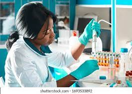
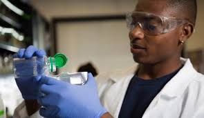

Science is the study of facts and the way we interact with the world. Learning about the scientific method teaches children how to ask questions and gather the evidence needed for the most complete answer. Comprehensive science education lets students learn how to develop ideas, discover the world around them, and ask challenging questions about our place in that world.
In most educational philosophies, learning about science simply isn’t enough. To fully understand the experiential nature of science, students need the space to do their own experiments, learn how to conduct research, and practice scientific learning through trial and error.
In academic school labs, students are active learners, not just passive recipients of knowledge.
Labs provide students with various opportunities to learn and experiment, which plays a crucial role in the ongoing intellectual development of students at any academic level. Science labs give students the time, space, and resources to explore and experiment.
Labs provide students with various opportunities to learn and experiment, which plays a crucial role in the ongoing intellectual development of students at any academic level. Science labs give students the time, space, and resources to explore and experiment.
Early Elementary Science Lab Learning
From the very start of a child’s educational journey, science labs can play an important role in educational development. At the kindergarten to second-grade levels, kids are beginning to grasp the idea that actions have consequences. Simple experiments work best for kids at this age level and they will need a lot of help to complete them.
An ideal science lab for elementary students has lots of safe equipment. Only the most basic chemicals are appropriate, like baking soda and vinegar.
Labs provide students with various opportunities to learn and experiment, which plays a crucial role in the ongoing intellectual development of students at any academic level. Science labs give students the time, space, and resources to explore and experiment.
Experiments that teach kids about color, light, and sound can help them explore their world. Doing science experiments benefits these kids by letting them be creative and not just receive answers, but find answers.
Labs provide students with various opportunities to learn and experiment, which plays a crucial role in the ongoing intellectual development of students at any academic level. Science labs give students the time, space, and resources to explore and experiment.
Because of the nature of elementary education, most science at this level is done in the classroom instead of a separate lab space. Students at this age level benefit greatly from consistent instruction, and getting up and going to a lab can be disruptive.
Early elementary teachers can take advantage of the time they spend with their students by having a designated science corner or an in-classroom lab.
Labs provide students with various opportunities to learn and experiment, which plays a crucial role in the ongoing intellectual development of students at any academic level. Science labs give students the time, space, and resources to explore and experiment.
Late Elementary Science Lab Learning
Students in grades 3-5 are just as curious as early elementary students but are better equipped to ask more articulate questions about their world. They are interested in exploring the relationships between living things and their environments, which means that new biological concepts like metamorphosis and the life cycle will start to resonate with them.
Labs provide students with various opportunities to learn and experiment, which plays a crucial role in the ongoing intellectual development of students at any academic level. Science labs give students the time, space, and resources to explore and experiment.
Like early elementary school students, late elementary school students typically use a single classroom instructional model for most academic subjects, including science. Keeping lab equipment in the classroom will help expose students to the types of equipment they’ll be seeing more regularly in the next stage of their academic careers.
Labs provide students with various opportunities to learn and experiment, which plays a crucial role in the ongoing intellectual development of students at any academic level. Science labs give students the time, space, and resources to explore and experiment.
The ideal science lab or science classroom for late elementary school students can be a little more complex than lab equipment for younger students, but not by much. Safety is still a huge concern, as little fingers aren’t the most coordinated.
Both stages of elementary school science should focus on introducing good safety practices like close-toed shoes, eye protection, and gloves where appropriate. Lab science lets these students learn about procedures and safety, as well as how their actions impact things around them.

Middle School Science Lab Learning
By middle school, students will be much more comfortable with the idea of transitioning learning spaces and instructors, so at this stage, it becomes much more feasible and enjoyable to have a separate classroom as a dedicated science lab space. Doing experiments in a science lab fosters independent learning, as well as interdependence and peer learning through working with lab partners.
Labs provide students with various opportunities to learn and experiment, which plays a crucial role in the ongoing intellectual development of students at any academic level. Science labs give students the time, space, and resources to explore and experiment.
Students at the middle school level are also more capable of grasping bigger, more complex concepts about the interrelatedness of various processes and how elements work in a biological or chemical system. They are more responsible and mature enough to handle glassware and run some experiments with less hands-on direction from the instructors.
Labs provide students with various opportunities to learn and experiment, which plays a crucial role in the ongoing intellectual development of students at any academic level. Science labs give students the time, space, and resources to explore and experiment.
The ideal middle school science lab is a standalone room where students have the space to conduct more complicated experiments, particularly in regard to basic chemistry. Dissections, light microscope work, and even introductory cell biology are appropriate for a middle school science lab. Depending on the size of the school, it may make sense to have dedicated chemistry and biology labs.
Labs provide students with various opportunities to learn and experiment, which plays a crucial role in the ongoing intellectual development of students at any academic level. Science labs give students the time, space, and resources to explore and experiment.
High School Science Lab Learning
Labs provide students with various opportunities to learn and experiment, which plays a crucial role in the ongoing intellectual development of students at any academic level. Science labs give students the time, space, and resources to explore and experiment.
By high school, students will have developed the capability to analyze systems more thoroughly and understand more advanced concepts. High school students typically need less time with an individual concept, and instruction at this level relies on building on the basic concepts towards a more advanced understanding of the principles of various sciences.

Labs provide students with various opportunities to learn and experiment, which plays a crucial role in the ongoing intellectual development of students at any academic level. Science labs give students the time, space, and resources to explore and experiment.
igh school science is designed to give students a solid foundation in understanding the natural world, but also to help students discover if a career in science is right for them. The hands-on education they get in the lab is vital to nurturing the next generation of science professionals, and the high school lab sciences should be as engaging as possible.
At this level, science labs can be more specialized. As the complexity of the science taught in the lab goes up, so does the level of specialization within the lab. High school chemistry and biology are advanced enough that they really do need to be taught in separate rooms with their own special set of equipment.
When students get to college, the world of science specialization blossoms. Where most high schools offer biology, chemistry, physics, and earth science, colleges can offer highly specialized versions of these courses that are tailored to the demands of the scientific professions. Labs are where future scientists learn how to take experiments further than they did in high school, and where they may find themselves really designing and running experiments of their own for the first time.
Each branch of science needs its own labs at the college stage, and many classes have designated lab space just for that one course’s lab needs. A microbiology lab has different requirements than an organic chemistry lab, and so there’s no one way to build university labs. Instead, lab designers need to consider the program’s specific needs, as well as the needs of the students.

 Labs provide students with various opportunities to learn and experiment, which plays a crucial role in the ongoing intellectual development of students at any academic level. Science labs give students the time, space, and resources to explore and experiment.
Late Elementary Science Lab Learning
Students in grades 3-5 are just as curious as early elementary students but are better equipped to ask more articulate questions about their world. They are interested in exploring the relationships between living things and their environments, which means that new biological concepts like metamorphosis and the life cycle will start to resonate with them.
Labs provide students with various opportunities to learn and experiment, which plays a crucial role in the ongoing intellectual development of students at any academic level. Science labs give students the time, space, and resources to explore and experiment.
Late Elementary Science Lab Learning
Students in grades 3-5 are just as curious as early elementary students but are better equipped to ask more articulate questions about their world. They are interested in exploring the relationships between living things and their environments, which means that new biological concepts like metamorphosis and the life cycle will start to resonate with them.